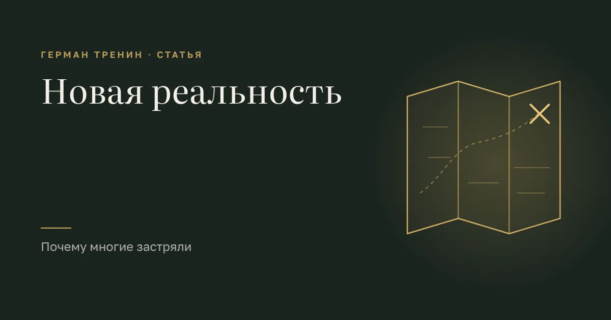

Новая реальность: как зарабатывать, когда старые правила не работают

Эпоха сменилась не в один день. Но однажды вы это заметили: правила, по которым вы жили, перестали работать.
Раньше было понятно. Учись — получишь место. Работай — вырастет доход. Терпи — оценят. Копи — сохранишь. Эти правила передавали из рук в руки, как семейное серебро. И они работали — у кого-то десятилетиями.
Теперь вы делаете то же самое, а результат не приходит. Или приходит не вам.
Старая карта
Представьте человека, который идёт по городу со старой картой. Улицы переименованы, мост снесён, на месте завода — пустырь. А он сверяется с бумагой и не понимает: почему я снова упёрся в стену?
Он не глупый. Карта была точной. Просто город изменился, а карта — нет.
Застревают не те, у кого плохая карта. Застревают те, кто продолжает ей верить.
Потому что признать, что карта устарела, — значит признать, что дальше придётся идти без неё. А это страшно.
Три способа застрять
Ждать. «Это временно. Скоро всё вернётся». Человек ставит жизнь на паузу: не вкладывается, не решается, не строит. Он не живёт — он пережидает. Год. Три. Пять. Пауза становится жизнью.
Делать больше того же. Правило не работает — значит, мало стараюсь. Больше часов, больше усилий, больше дисциплины. Силы кончаются, стена на месте. Это как громче кричать тому, кто говорит на другом языке.
Искать, кто виноват. Государство, рынок, поколение, обстоятельства. Виноватые могут быть настоящими. Но пока вы смотрите на них, руль не в ваших руках. И стена никуда не денется.
Почему так трудно сменить карту
Дело не в уме и не в характере. Дело в том, что карту вам выдали не вы.
Правила о деньгах, труде и безопасности вы приняли рано — от родителей, которые сами жили в своей эпохе и честно передали вам своё. Эти правила легли глубже, чем знания. Они стали ощущением: «так правильно», «так безопасно», «так положено».
Поэтому, когда вы головой понимаете, что мир другой, внутри что-то не отпускает. Новая возможность появляется — а в теле сжатие: «не по-нашему», «рискованно», «а вдруг». И вы выбираете привычное. Не потому что оно работает. Потому что оно знакомое.
Старая карта — не бумага. Она лежит в вас. И перерисовать её силой воли не получается, как не получается уговорить себя не бояться.
Что помогает
Не новые курсы и не ещё одна порция мотивации. Сначала — увидеть свою карту. Найти, какие правила вы носите и откуда они. Чьи это голоса. В какой момент вы решили, что только так безопасно.
Когда это становится видно, странное происходит само: правило перестаёт быть законом и становится просто чьим-то старым советом. Его можно поблагодарить — и отложить.
Главное
Эпоха сменилась — и с этим ничего не поделать. Но застряли не из-за эпохи. Застряли из-за карты, которую пора пересмотреть.
Город другой. Вы можете пройти по нему заново. Только без старой бумаги в руках.
— Герман, Архитектор ресурса
← Предыдущая статья: Почему цели не достигаются
Следующая статья: Что приготовила новая реальность и как теперь зарабатывать →